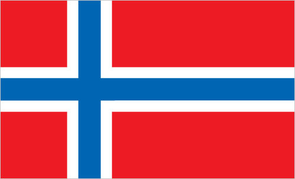

Antarctica :: BOUVET ISLAND
Introduction :: BOUVET ISLAND
-
This uninhabited, volcanic, Antarctic island is almost entirely covered by glaciers making it difficult to approach; it is recognized as the most remote island on Earth. Bouvet Island was discovered in 1739 by a French naval officer after whom it is named. No claim was made until 1825, when the British flag was raised. A few expeditions visited the island in the late 19th century. In 1928, the UK waived its claim in favor of Norway, which had occupied the island the previous year. In 1971, Norway designated Bouvet Island and the adjacent territorial waters a nature reserve. Since 1977, Norway has run an automated meteorological station and studied foraging strategies and distribution of fur seals and penguins on the island. In February 2006, an earthquake weakened the station's foundation causing it to be blown out to sea in a winter storm. Norway erected a new research station in 2014 that can hold six people for periods of two to four months.
Geography :: BOUVET ISLAND
-
island in the South Atlantic Ocean, southwest of the Cape of Good Hope (South Africa)54 26 S, 3 24 EAntarctic Regiontotal: 49 sq kmland: 49 sq kmwater: 0 sq kmcountry comparison to the world: 234about 0.3 times the size of Washington, DC0 km29.6 kmterritorial sea: 4 nmantarcticvolcanic; coast is mostly inaccessiblemean elevation: NAelevation extremes: lowest point: South Atlantic Ocean 0 mhighest point: Olavtoppen (Olav Peak) 780 mnoneagricultural land: 0%arable land 0%; permanent crops 0%; permanent pasture 0%forest: 0%other: 100% (93% ice) (2011 est.)occasional volcanism, rock slides; harsh climate, surrounded by pack ice in winternone; almost entirely ice coveredcovered by glacial ice; declared a nature reserve by Norway
People and Society :: BOUVET ISLAND
-
uninhabited
Government :: BOUVET ISLAND
-
conventional long form: noneconventional short form: Bouvet Islandetymology: named after the French naval officer Jean-Baptiste Charles BOUVET who discovered the island in 1739territory of Norway; administered by the Polar Department of the Ministry of Justice and Oslo Policethe laws of Norway, where applicable, applythe flag of Norway is used
Economy :: BOUVET ISLAND
-
no economic activity; declared a nature reserve
Communications :: BOUVET ISLAND
-
.bvhas an automated meteorological station
Transportation :: BOUVET ISLAND
-
none; offshore anchorage only
Military and Security :: BOUVET ISLAND
-
defense is the responsibility of Norway
Transnational Issues :: BOUVET ISLAND
-
none